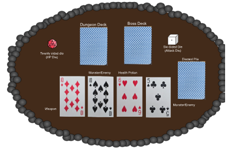

Instructional Document
2025Technical Writing
Technical Writing Course, Missouri S&T

Overview
A structured instructional document written for "Deck Crawler", an original solo card-and-dice dungeon crawling game designed by the author. The document guides a new player through every phase of the game using numbered steps, defined terminology, and supporting diagrams — following standard instructional writing conventions for clarity and usability.
Document Highlights
- Safety warning, materials list, and a definitions section establishing key game terms before instructions begin.
- Four clearly delineated phases: Deck Construction, Stepping Through the Dungeon, Standard Play, and the Boss Encounter.
- Numbered steps with bolded action labels for quick scanning and reference during play.
- Annotated layout diagrams (Figures 1–3) illustrating the playing field at each stage of the game.
- Boss modifier rules for four unique face-card enemies, each with distinct mechanics.
Project Document
The full instructional document is available to view below.
Download Instructional Document (PDF)